library(tidyverse)
library(easystats)
library(ggpubr)
library(visdat)
library(rstanarm)mariokart_desk-inf-mod
R
bayes
lagemaße
regression
tidyverse
vis
yacsda
1 Aufgabe
Untersuchen Sie den Datensatz mariokart. Beantworten Sie dabei die folgende Forschungsfrage:
Erzielen Spiele mit Photo (
stock_photo) einen höheren Verkaufspreis (total_pr) im Vergleich zu Spielen ohne Photo?
- Prüfen Sie auf fehlende Werte und Extremwerte und führen Sie ggf. entsprechende Schritte aus, um etwaige Probleme in diesem Zusammenhang zu lösen.
- Berechnen Sie relevante deskriptive Statistiken.
- Visualisieren Sie die die Daten sinnvoll.
- Berechnen und interpretieren Sie ein passendes Modell. e.Berechnen und interpretieren Sie Maße der Inferenzstatistik (Bayes oder Frequentistisch).
Hinweise:
- Beachten Sie die üblichen Hinweise des Datenwerks.
2 Lösung
2.1 Vorbereitung
mariokart <- read.csv("https://vincentarelbundock.github.io/Rdatasets/csv/openintro/mariokart.csv")2.2 Vorverarbeitung
2.2.1 Extremwerte
gghistogram(mariokart, x = "total_pr")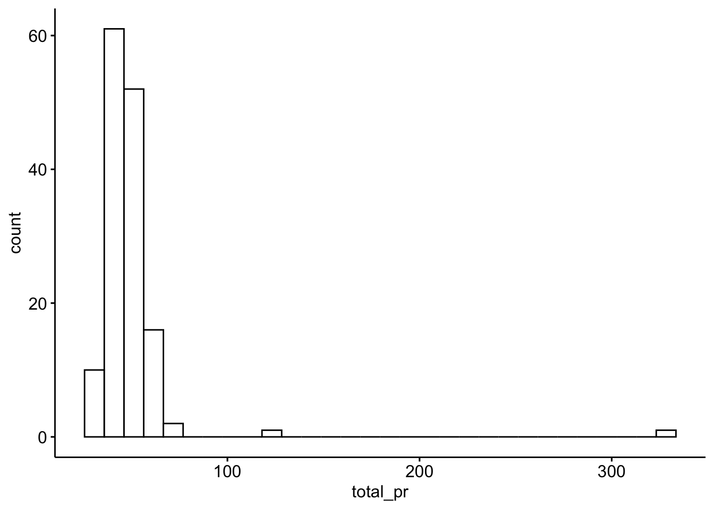
Ja, besser wir entfernen die Extremwerte:
mariokart_no_extreme <-
mariokart |>
filter(total_pr < 100)2.2.2 Fehlende Werte
Fehlende Werte visualisieren:
vis_dat(mariokart_no_extreme)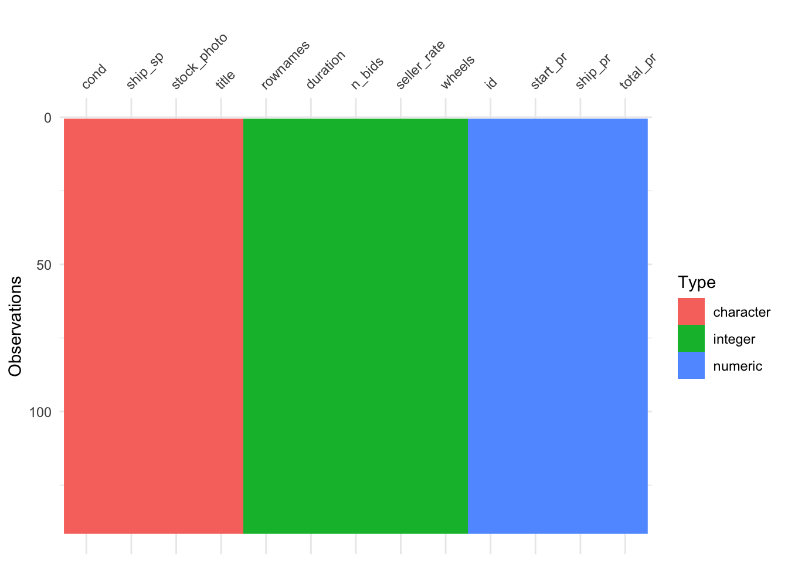
Fehlende Werte zählen:
colSums(is.na(mariokart_no_extreme)) rownames id duration n_bids cond start_pr
0 0 0 0 0 0
ship_pr total_pr ship_sp seller_rate stock_photo wheels
0 0 0 0 0 0
title
0 Oder so, mit dplyr:
mariokart_no_extreme |>
summarise(across(everything(), ~ sum(is.na(.x))))| rownames | id | duration | n_bids | cond | start_pr | ship_pr | total_pr | ship_sp | seller_rate | stock_photo | wheels | title |
|---|---|---|---|---|---|---|---|---|---|---|---|---|
| 0 | 0 | 0 | 0 | 0 | 0 | 0 | 0 | 0 | 0 | 0 | 0 | 0 |
2.3 Deskriptive Statistik
2.3.1 Metrische Variablen
Überblick
describe_distribution(mariokart_no_extreme) |>
format_table(digits = 2)| Variable | Mean | SD | IQR | Min | Max | Skewness | Kurtosis | n | n_Missing |
|---|---|---|---|---|---|---|---|---|---|
| rownames | 72.42 | 41.48 | 72.00 | 1.00 | 143.00 | -0.02 | -1.20 | 141 | 0 |
| id | 2.25e+11 | 8.78e+10 | 1.60e+11 | 1.10e+11 | 4.00e+11 | 0.23 | -1.24 | 141 | 0 |
| duration | 3.75 | 2.59 | 6.00 | 1.00 | 10.00 | 0.35 | -1.31 | 141 | 0 |
| n_bids | 13.38 | 5.76 | 7.50 | 1.00 | 29.00 | -0.07 | -0.03 | 141 | 0 |
| start_pr | 8.85 | 15.16 | 9.01 | 0.01 | 69.95 | 2.35 | 5.40 | 141 | 0 |
| ship_pr | 2.98 | 2.62 | 4.00 | 0.00 | 11.45 | 0.95 | 1.32 | 141 | 0 |
| total_pr | 47.43 | 9.11 | 12.99 | 28.98 | 75.00 | 0.41 | -1.75e-03 | 141 | 0 |
| seller_rate | 16122.82 | 52174.55 | 4748.50 | 0.00 | 2.70e+05 | 4.06 | 16.12 | 141 | 0 |
| wheels | 1.15 | 0.84 | 2.00 | 0.00 | 4.00 | 0.14 | -0.45 | 141 | 0 |
Visualisierung:
describe_distribution(mariokart_no_extreme) |> plot()[[1]]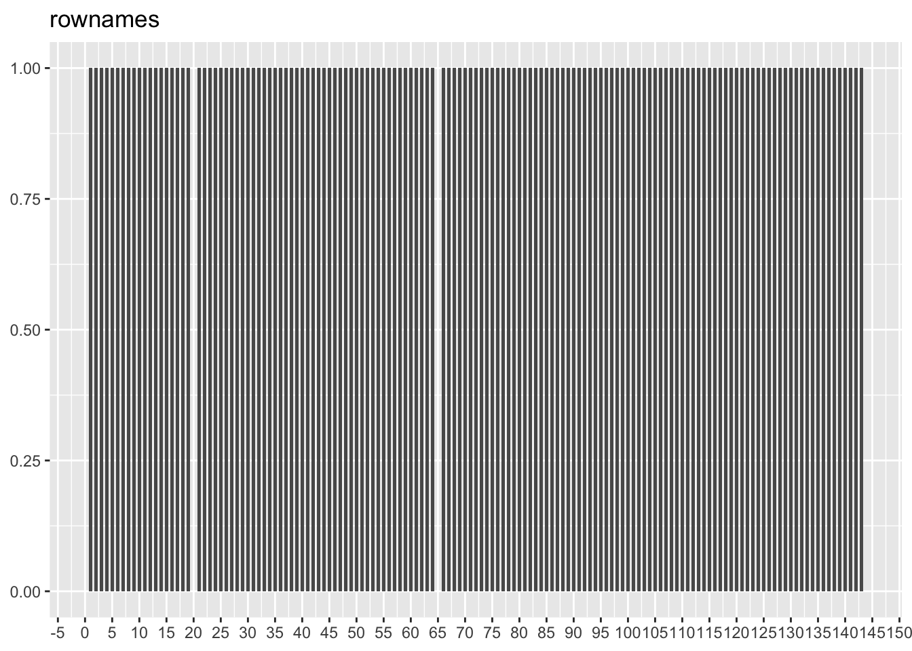
[[2]]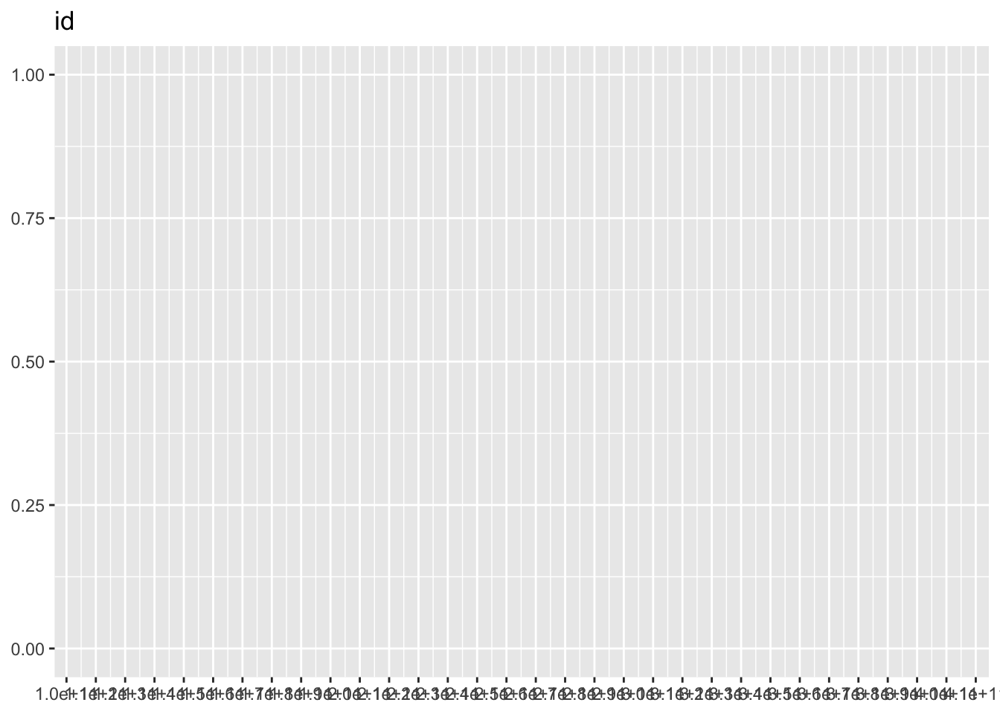
[[3]]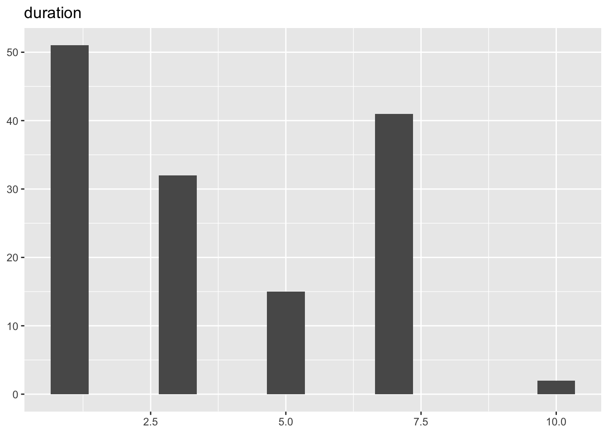
[[4]]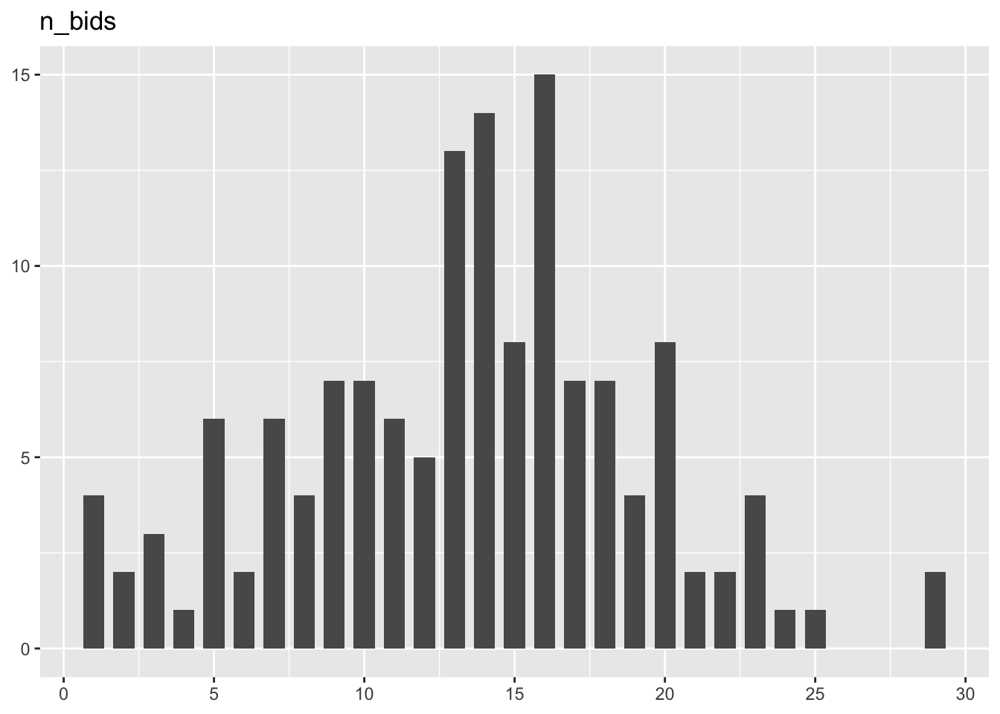
[[5]]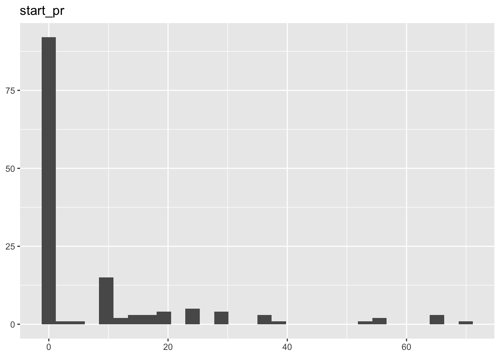
[[6]]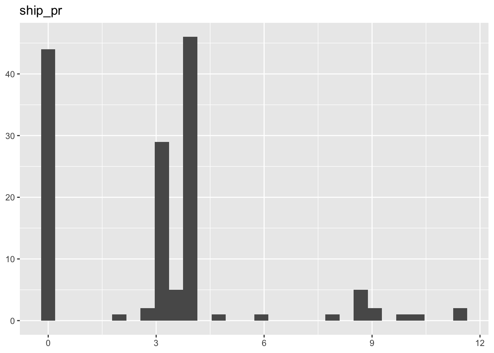
[[7]]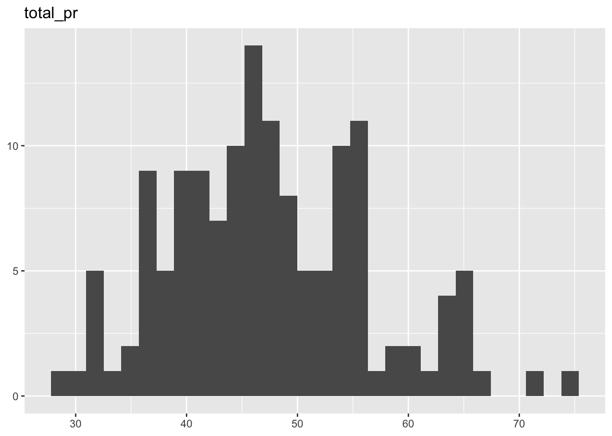
[[8]]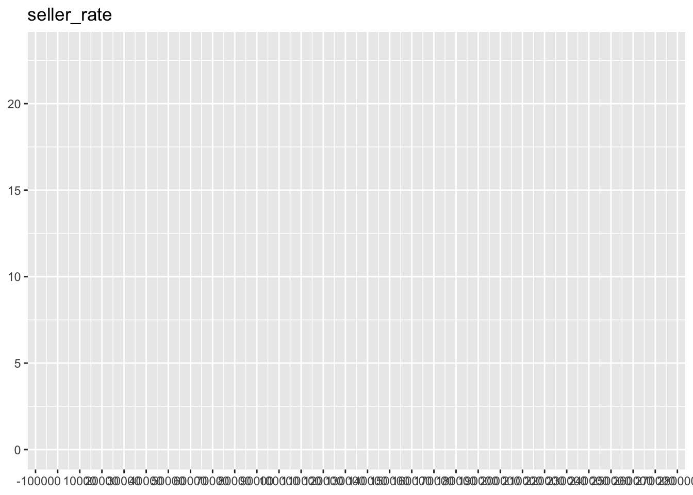
[[9]]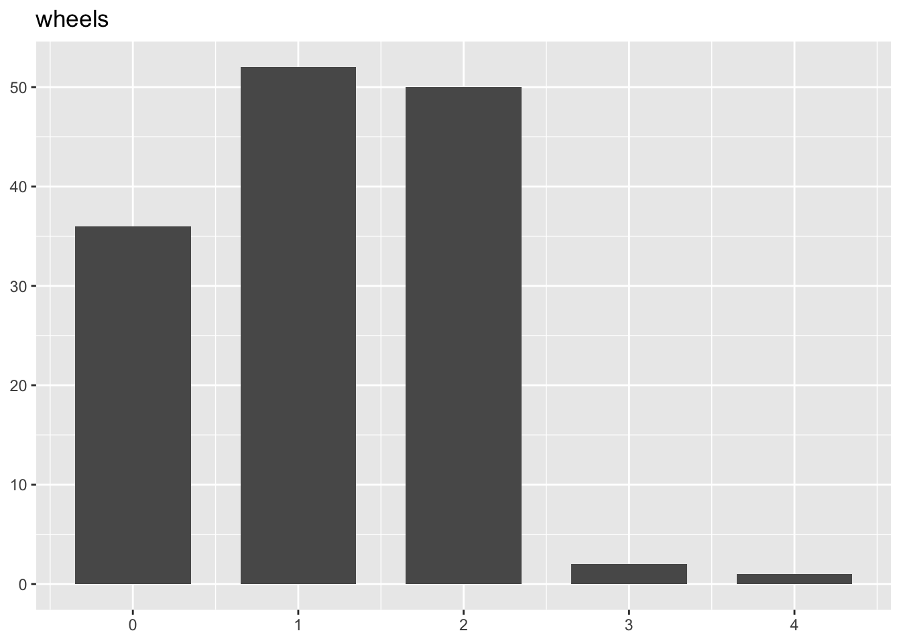
2.3.2 Nominale Variablen
Überblick:
data_tabulate(mariokart_no_extreme,
select = c("cond", "ship_sp", "stock_photo")) |>
print_md() |>
format_table(digits = 2)| x |
|---|
| Table: Frequency Table |
| |Variable | Value| N|Raw % | Valid %| Cumulative %| |
| |:———–|———-:|—:|:—–|——-:|————:| |
| |cond | new| 59|41.84 | 41.84| 41.84| |
| | | used| 82|58.16 | 58.16| 100.00| |
| | | (NA)| 0| 0.00 | (NA)| (NA)| |
| | | | | | | | |
| |ship_sp | firstClass| 22|15.60 | 15.60| 15.60| |
| | | media| 14| 9.93 | 9.93| 25.53| |
| | | other| 3| 2.13 | 2.13| 27.66| |
| | | parcel| 14| 9.93 | 9.93| 37.59| |
| | | priority| 23|16.31 | 16.31| 53.90| |
| | | standard| 33|23.40 | 23.40| 77.30| |
| | | ups3Day| 1| 0.71 | 0.71| 78.01| |
| | | upsGround| 31|21.99 | 21.99| 100.00| |
| | | (NA)| 0| 0.00 | (NA)| (NA)| |
| | | | | | | | |
| |stock_photo | no| 36|25.53 | 25.53| 25.53| |
| | | yes| 105|74.47 | 74.47| 100.00| |
| | | (NA)| 0| 0.00 | (NA)| (NA)| |
| | | | | | | | |
Visualisierung:
data_tabulate(mariokart_no_extreme,
select = c("cond", "ship_sp", "stock_photo")) |>
plot()[[1]]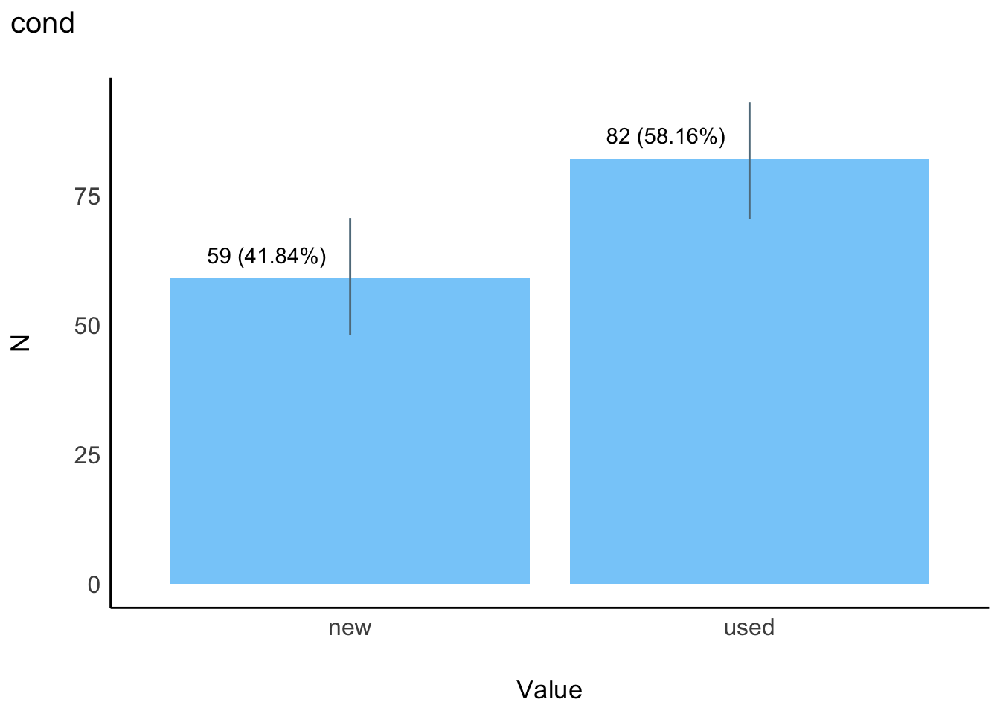
[[2]]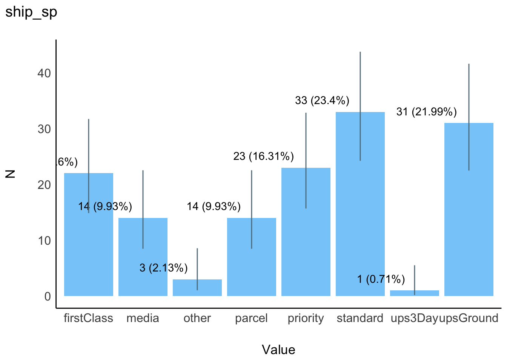
[[3]]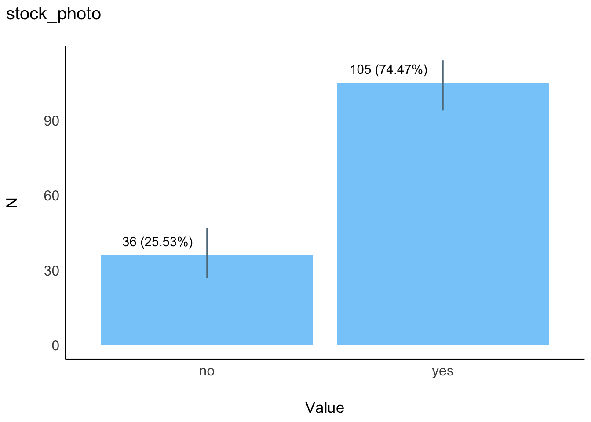
2.3.3 Alternative
skimr::skim(mariokart_no_extreme)| Name | mariokart_no_extreme |
| Number of rows | 141 |
| Number of columns | 13 |
| _______________________ | |
| Column type frequency: | |
| character | 4 |
| numeric | 9 |
| ________________________ | |
| Group variables | None |
Variable type: character
| skim_variable | n_missing | complete_rate | min | max | empty | n_unique | whitespace |
|---|---|---|---|---|---|---|---|
| cond | 0 | 1 | 3 | 4 | 0 | 2 | 0 |
| ship_sp | 0 | 1 | 5 | 10 | 0 | 8 | 0 |
| stock_photo | 0 | 1 | 2 | 3 | 0 | 2 | 0 |
| title | 0 | 1 | 0 | 59 | 1 | 79 | 0 |
Variable type: numeric
| skim_variable | n_missing | complete_rate | mean | sd | p0 | p25 | p50 | p75 | p100 | hist |
|---|---|---|---|---|---|---|---|---|---|---|
| rownames | 0 | 1 | 7.242000e+01 | 4.148000e+01 | 1.000000e+00 | 3.700000e+01 | 7.300000e+01 | 1.080000e+02 | 1.430000e+02 | ▇▇▇▇▇ |
| id | 0 | 1 | 2.249920e+11 | 8.784150e+10 | 1.104395e+11 | 1.403507e+11 | 2.303822e+11 | 3.003523e+11 | 4.000775e+11 | ▇▅▅▅▃ |
| duration | 0 | 1 | 3.750000e+00 | 2.590000e+00 | 1.000000e+00 | 1.000000e+00 | 3.000000e+00 | 7.000000e+00 | 1.000000e+01 | ▇▅▂▆▁ |
| n_bids | 0 | 1 | 1.338000e+01 | 5.760000e+00 | 1.000000e+00 | 1.000000e+01 | 1.400000e+01 | 1.700000e+01 | 2.900000e+01 | ▂▅▇▃▁ |
| start_pr | 0 | 1 | 8.850000e+00 | 1.516000e+01 | 1.000000e-02 | 9.900000e-01 | 1.000000e+00 | 1.000000e+01 | 6.995000e+01 | ▇▁▁▁▁ |
| ship_pr | 0 | 1 | 2.980000e+00 | 2.620000e+00 | 0.000000e+00 | 0.000000e+00 | 2.990000e+00 | 4.000000e+00 | 1.145000e+01 | ▅▇▁▁▁ |
| total_pr | 0 | 1 | 4.743000e+01 | 9.110000e+00 | 2.898000e+01 | 4.100000e+01 | 4.603000e+01 | 5.399000e+01 | 7.500000e+01 | ▃▇▆▂▁ |
| seller_rate | 0 | 1 | 1.612282e+04 | 5.217455e+04 | 0.000000e+00 | 1.160000e+02 | 8.200000e+02 | 4.858000e+03 | 2.701440e+05 | ▇▁▁▁▁ |
| wheels | 0 | 1 | 1.150000e+00 | 8.400000e-01 | 0.000000e+00 | 0.000000e+00 | 1.000000e+00 | 2.000000e+00 | 4.000000e+00 | ▆▇▇▁▁ |
2.4 Visualisierung
ggboxplot(data = mariokart_no_extreme,
x = "stock_photo",
y = "total_pr",
add = "mean_se",
add.params = list(color = okabeito_colors()[1]))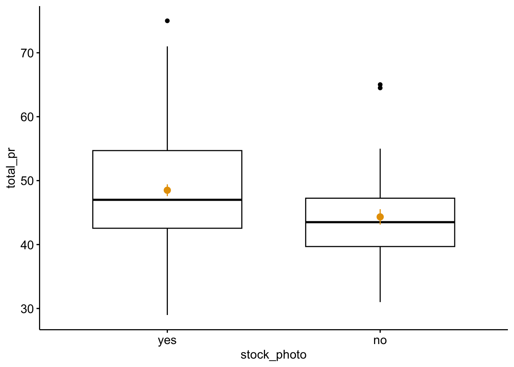
2.5 Modellierung
2.5.1 Kausalmodell
Wir nehmen folgendes Kausalmodell an.
graph LR photo --> price u --> price
Unter der Annahme dieses Kausalmodells können wir die Modellkoeffizienten als valide betrachten.
2.5.2 Modell - Frequentistisch
Modell berechnen und Parameter prüfen:
lm1 <- lm(total_pr ~ stock_photo, data = mariokart_no_extreme)
parameters(lm1) |>
format_table(digits = 2)| Parameter | Coefficient | SE | 95% CI | t(139) | p |
|---|---|---|---|---|---|
| (Intercept) | 44.33 | 1.49 | [41.37, 47.28] | 29.68 | < .001 |
| stock photo [yes] | 4.17 | 1.73 | [ 0.75, 7.59] | 2.41 | 0.017 |
Visualisierung:
parameters(lm1) |> plot()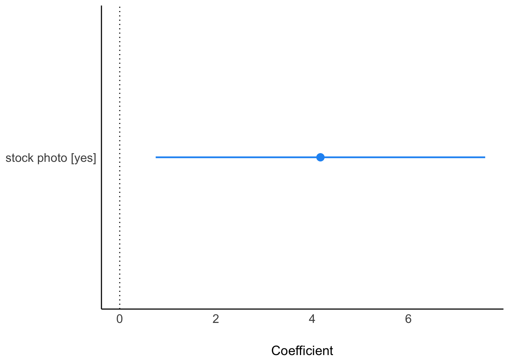
2.5.3 Modell - Bayesianisch
Modell berechnen und Parameter prüfen:
lm1_bayes <- stan_glm(total_pr ~ stock_photo,
data = mariokart_no_extreme,
refresh = 0)
parameters(lm1_bayes)| Parameter | Median | CI | CI_low | CI_high | pd | Rhat | ESS | Prior_Distribution | Prior_Location | Prior_Scale |
|---|---|---|---|---|---|---|---|---|---|---|
| (Intercept) | 44.316515 | 0.95 | 41.4350299 | 47.19626 | 1.0000 | 0.9993066 | 3921.641 | normal | 47.43191 | 22.78413 |
| stock_photoyes | 4.135404 | 0.95 | 0.7612465 | 7.60058 | 0.9915 | 0.9996097 | 3921.610 | normal | 0.00000 | 52.06671 |
Visualisierung:
parameters(lm1_bayes) |> plot()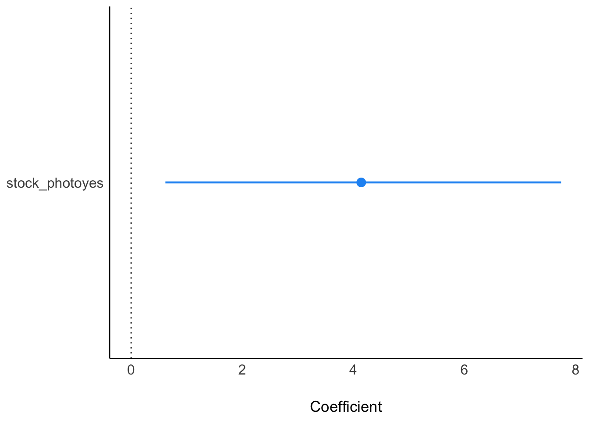
2.6 Inferenzstatistik
2.6.1 Nullhypothese
Wie man sieht, ist die Null nicht im Konfidenzintervall enthalten. Daher können wir die Nullhypothese ausschließen.
2.6.2 ROPE
Wir können eine ROPE-Nullhypothese nicht komplett ausschließen, aber fast.
rope(lm1_bayes)| Parameter | CI | ROPE_low | ROPE_high | ROPE_Percentage | Effects | Component |
|---|---|---|---|---|---|---|
| (Intercept) | 0.95 | -0.9113651 | 0.9113651 | 0.0000000 | fixed | conditional |
| stock_photoyes | 0.95 | -0.9113651 | 0.9113651 | 0.0063158 | fixed | conditional |
Visualisierung:
rope(lm1_bayes) |> plot()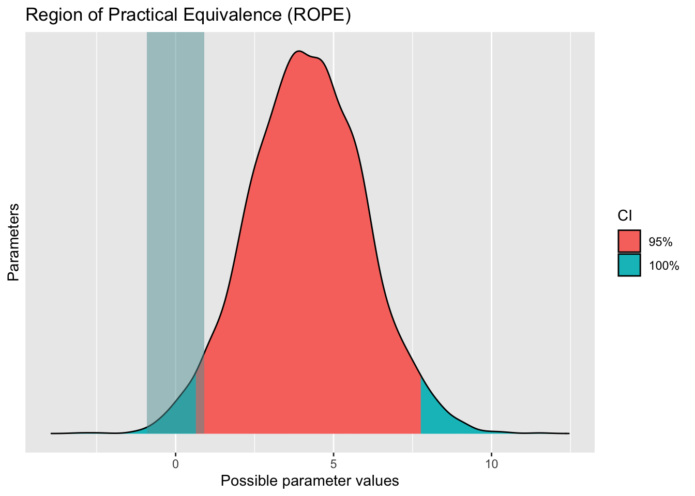